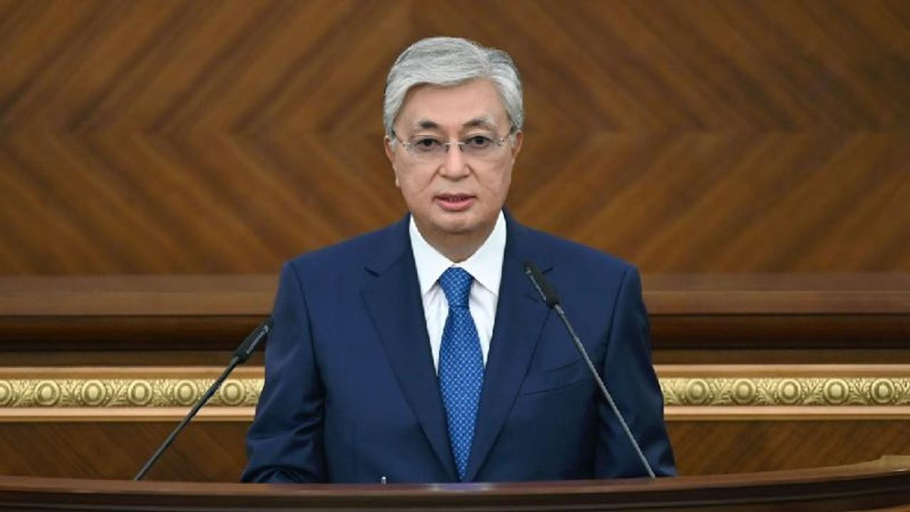

Мемлекет басшысы Қасым-Жомарт Тоқаевтың Қазақстан халқына Жолдауы
МЕМЛЕКЕТ БАСШЫСЫ
Қ.К.ТОҚАЕВТЫҢ
ҚАЗАҚСТАН ХАЛҚЫНА ЖОЛДАУЫ
ӘДІЛЕТТІ МЕМЛЕКЕТ. БІРТҰТАС ҰЛТ. БЕРЕКЕЛІ ҚОҒАМ
Құрметті отандастар!
Қадірлі депутаттар және Үкімет мүшелері!
Қазақстан Республикасы Конституциясының 59-шы бабына сәйкес VII шақырылымдағы Парламенттің үшінші сессиясын ашық деп жариялаймын.
Құрметті депутаттар!
Баршаңызды Парламенттің кезекті сессиясының ашылуымен құттықтаймын!
Биыл біз жаңа кезеңге қадам бастық. Халқымыз жалпыұлттық референдумда саяси жаңғыру бағдарын қолдады. Конституциялық реформа Жаңа, Әділетті Қазақстанды құру жолындағы аса маңызды қадам болды. Еліміздегі саяси жаңғыру енді экономикалық өзгерістерге ұласуға тиіс.
Біз «Азамат – бизнес – мемлекет» арасындағы қатынасты түбегейлі өзгертеміз. Мемлекет, ең алдымен, бәріне бірдей мүмкіндік беріп, әділдік орнатады. Қоғам игілігіне арналған қызмет деңгейі жоғары болуына кепілдік береді. Әлеуметтік жағынан әлсіз топтағы азаматтарға қолдау көрсетеміз. Мүмкіндігі шектеулі жандарға да көмектесеміз. Президент жанындағы Омбудсмен тағайындалады.
Мемлекет экономикалық еркіндікті қолдайды. Бірақ, халықты нарық тұрақсыздығының ықпалынан барынша қорғайды. Шағын және орта бизнесті мейлінше дамытады.
Енді реформалардың нақты бағдарларына тоқталайын.
БІРІНШІ БАҒДАР. ЖАҢА ЭКОНОМИКАЛЫҚ САЯСАТ.
Біз экономикамызда қордаланған мәселелерді жақсы білеміз. Мысалы, шикізатқа әлі де тәуелдіміз. Еңбек өнімділігі төмен, инновация жеткіліксіз. Ұлттық табыстың игілігін жұрттың бәрі бірдей көріп отырған жоқ.
Әрине, мұның барлығы – күрделі мәселелер. Бірақ, оны шешудің нақты жолдары бар.
Атап айтсақ, бұл – макроэкономикалық тұрақтылықты қамтамасыз ету, экономиканы әртараптандыру және цифрландыру. Сондай-ақ, шағын және орта бизнес пен адам капиталын дамыту, заң үстемдігін орнықтыру. Сондықтан, тың тәсілдер қажет екені сөзсіз.
Экономикалық саясатымыздың негізгі мақсаты еш өзгермейді. Оның мәні – сапалық және инклюзивтік тұрғыдан халықтың әл-ауқатын арттыру.
Жаңа экономикалық бағдарымыздың басты басымдықтары мыналар:
– жеке кәсіпкерлік бастамаларды ынталандыру, яғни, мемлекеттік капитализмнен және мемлекеттің экономикаға шектен тыс араласуынан бас тарту;
– бәсекелестікті дамыту, яғни бәріне бірдей мүмкіндік беру;
– сондай-ақ, ұлттық табысты әділ бөлу.
Мұның бәрі кезек күттірмейтін бірқатар маңызды міндетті шешуді талап етеді.
Бірінші. Бағаны әкімшілік жолмен реттеу тұтас салалардың инвестициялық тартымдылығын төмендетеді. Сондай-ақ, тауар тапшылығын туындатып, елді импортқа тәуелді етеді.
Сондықтан, баға белгілеу ісіне мемлекеттің араласуынан біртіндеп бас тарту керек. Бәсекелік ортасы жоқ нарықтар ғана бұрынғыдай қала береді. Монополистердің тарифтері қатаң бақылауда болады. Бірақ, бақылау жасау орынсыз қысым көрсету деген сөз емес.
Бүгінде мемлекеттік органдардың, соның ішінде күштік құрылымдардың бизнесті тексеруге жаппай кірісіп, бағалар мен тарифтерді төмендетуді талап етуі жиілеп кетті. Құр дақпырт үшін жасалатын мұндай әрекеттерді доғару керек.
Монополияның табысын шектеу қажеттігі мен инфрақұрылымға инвестиция салуды қамтамасыз ету арасында тепе-теңдікті сақтау маңызды. Елімізде электр қуатымен қамтамасыз ететін желілердің үштен екісінің, жылу коммуникациясының 57 пайызының және су құбыры желісінің жартысына жуығының тозығы жеткен. Осыдан-ақ біраз жайтты аңғаруға болады.
Тарифтерді күшпен ұстап тұрудың ақыры соның бәрін кезекпен өшіруге және түрлі апатты жағдайлар туындауына әкеп соқтырады. Осының салдарынан азаматтардың денсаулығына және өміріне қатер төнеді.
Монополиялы нарықтарда «Тарифті инвестицияға айырбастау» деген жаңа тариф саясатына көшу керек. Желілер мен қуат көздерінің тозу деңгейін кемінде 15 пайызға азайту қажет.
Тариф инфрақұрылымға қаржы салғаны және ашықтықты қамтамасыз етудің мемлекеттік мониторингі жүйесіне қатысқаны үшін беріледі. Меншік иесі инвестицияның айтарлықтай бөлігін тарифтің емес, өз қаржысының есебінен салуға тиіс.
Инновация енгізу үшін тиімді ынталандыру шараларын әзірлеген жөн. Сондай-ақ, шығыстың бір бөлігін тарифтік сметаның аясында қайта бөлуге және табыстың белгілі бір бөлігін сақтап қалуға рұқсат беру керек.
Тарифтерді тоғыспалы субсидиялаудан, яғни бір тұтынушылар үшін бағаны ұстап тұру мақсатымен басқалар үшін бағаны көтеру тәсілінен біртіндеп бас тарту қажет.
Екінші. Экономиканы одан ары монополиясыздандыру үшін нақты институционалдық шешімдер қабылдау қажет.
«Конгломерат» ұғымын заң жүзінде айқындап алған жөн.
Нарықтың өзара байланысты субъектілері экономикалық әлеуетін бір жерге шоғырландыру үшін рұқсат алуға міндетті. Олардың барлық мәмілесін, соның ішінде нарыққа тән емес бағаларды қолдану белгілері бойынша жасалған келісімдерін де мұқият тексеру керек.
Бірыңғай операторлардың қызметі нарықтық экономиканы дамытуға кері әсер етеді. Сондықтан, бұл институтты ретке келтірген жөн. Қазір жұмыс істеп тұрған операторларды бәсекелі ортаға беру қажет немесе монополист деп танып, қызметін монополияға қарсы арнаулы құқық аясында реттеу керек.
Үшінші. Экономиканың тұрақты өсуі салық саясатының түсінікті және болжауға болатындай етіп жүргізілуіне тікелей байланысты.
Фискалды реттеу ісін қайта жаңғырту үшін 2023 жылы жаңа Салық кодексі әзірленеді. Оның ең түйткілді тұсы саналатын салықтық әкімшілендіру мәселесі түгел қайта жазылуға тиіс.
Сондай-ақ, жұмыс барысында бетпе-бет кездесу мүлдем болмайтындай етіп, салықтық бақылау қызметін толық цифрландыру керек.
Тағы бір басымдық – салықтық ынталандыру шараларының тиімділігін арттыру. Ол үшін экономиканың түрлі саласында дифференциалды салық мөлшерлемесіне көшкен жөн.
Пайданың технологиялық жаңғыруға және ғылыми әзірлемелерге жұмсалған бөлігіне салынатын корпоративті табыс салығын төмендету немесе одан босату тәсілін енгізу керек.
Салық төлеушілерді салықтан жалтаруға құмарлығын азайту үшін арнайы салық режімдерін жеңілдету керек. Салық жүктемесін төмендету мақсатында ұйымдарды әдейі бөлшектеуге жол бермеу мәселесі жаңа кодексте қарастырылуы қажет.
Сауда-саттық заман талабына сай дамуы үшін мөлшерлемесі ойға қонымды әрі рәсімдері қарапайым бөлшек сауда салығын қолдану аясын кеңейту керек.
Салық реформасы аясында «сән-салтанатқа салық» салуды енгізген жөн. Мұның орта тапқа қатысы жоқ, бұл салық тек аса қымбат жылжымайтын мүлік және автокөлік сатып алған кезде салынады.
Автокөлік сатып алу кезінде төленетін алым-салық мәселесіне жеке тоқталайын. Кейбір жақын шетелдерден әкелінген автокөліктерге қатысты түйткілдер баршаға мәлім. Заң аясынан тыс қалып отырған мұндай көліктер қоғамдық қауіпсіздікке қатер төндіруде. Заңсыз көлік әкелетін амал-тәсілдің бәріне тосқауыл қою үшін батыл шаралар қабылдау қажет. Ал, биылғы 1 қыркүйекке дейін елге әкелінген автокөліктерге қатысты ахуалды реттеу керек. Оларды заңдастыру мақсатында утилизация және алғашқы тіркеу үшін төленетін қаржы көлемін 200-250 мың теңгеден асырмай, бәріне бірдей және бір реттік алым алуды ұсынамын. Бұл – іздеу салынбаған және кеден рәсімдерінен өткен көліктерге ғана қатысты шара.
Төртінші. Салық саясатының тиімді болуы кеден жұмысының ашықтығына тығыз байланысты.
Салық және кеден саласындағы ақпараттық жүйелерді толық біріктіру ісін аяқтау маңызды.
Келесі мәселе. Тексерушілердің тым көптігі. Олардың теріс әсер еткені белгілі. Сондықтан, шекараға интеграцияланған кедендік бақылау тәсілін енгізу қажет.
Кедендік рәсімдеу орталықтары «бір терезе» қағидаты бойынша жұмыс істеуге тиіс.
Бесінші. Біз «көрпеге қарай көсілу» қажет екенін ұмытпауымыз керек.
Бюджет саясатына реформа жасалады. Ақырғы нәтижені дөп басуымыз керек. Бюджет кодексінде шекті нормативтер бекітіледі. Оны бюджетті жоспарлау және орындау кезінде міндетті түрде ұстану қажет.
Ұлттық қордың қаржысын тиімсіз жұмсау тоқтатылады. Бұл – өте өзекті мәселе. Қордың қаражатын аса қажет инфрақұрылымды дамытуға және еліміз үшін маңызы зор жобаларды қаржыландыруға жұмсаймыз.
Бюджет үдерістерін барынша жеңілдету қажет. Мемлекеттік органдардың игерілмеген қаражатты келесі жылға қалдыруына мүмкіндік беру керек. Сол арқылы олар ақшаны бюджетке қайтарудың тиімсіз тәртібінен құтылады. Сонымен бірге, бюджетке қатысты тәуекелдерді басқару жүйесін іске қосу керек.Бұл жүйе квазимемлекеттік секторды да қамтуға тиіс.
Біз салық түсімін өңірлердің өзіне бере бастадық. Бұл жұмысты жалғастыру қажет.
«Халық қатысатын бюджет» жобасы тиімді іске асырылып жатыр. Оның ауқымын кеңейтіп, жобаға аудандық маңызы бар қалалар мен ауылдарды тарту керек. Тұрғын-үй коммуналдық шаруашылығы қаржысының кемінде 10 пайызы қайда жұмсалатынын қоғамның өзі айқындауға тиіс. Осы айтылған мәселелерді тиімді жүзеге асыру үшін жаңа Бюджет кодексін қабылдау қажет.
Алтыншы. Кәсіпкерлікті жүйелі түрде қолдау.
Бұл жұмыста бәрін басынан бастап реттеу керек. Тапсырма екі жылдан бері орындалмай келеді. Жүздеген, тіпті мыңдаған заңнамалық құжат пен нұсқаулықты қайта-қайта түзете бергеннен ештеңе шықпайды. Оның орнына ықшам әрі түсінікті жаңа ережелерді бекіткен жөн. Мұндай тәсілді 2024 жылғы 1 қаңтардан бастап толық енгізу қажет.
Келесі мәселе. Мемлекет қаржылай қолдау жасаған кезде бәсекеге қабілетті шағын және орта бизнес өкілдеріне баса мән береді. Еңбекақы төлеу қорын көбейткен және салық төлемдерін арттырған кәсіпорындарға қолдау көрсетіледі. Бұл – негізгі талап.
Сонымен қатар, мемлекеттен көмек алатын бизнес өкілдерін анықтайтын автоматты жүйе енгізіледі. Мемлекеттік сатып алудың мүлде жаңа жүйесі жасалады. Бағаның төмен болуы ғана емес, тауарлар мен қызметтердің сапасы басты назарда болады.
Мемлекеттік және квазимемлекеттік сатып алуды бірыңғай платформаға көшіру қажет.
Осының бәрін жүзеге асыру үшін «Мемлекеттік сатып алу туралы» жаңа заң қабылдануға тиіс.
Жетінші. Мемлекет пен жекеменшік серіктестігінің жаңа үлгісіне көшу керек.
Қазір көптеген жоба кейбір кәсіпкерлер мен шенеуніктердің майшелпегіне айналды. Келісім-шарттар ашық және конкурстық негізде жасалуға тиіс. Осы мақсатта тиісті заң қабылдау қажет.
Сегізінші. Несие ресурстарының тапшылығы отандық бизнес үшін үлкен проблема болып отыр.
Қазақстанда шағын және орта бизнесті қаржыландыру үшін 42 миллиард долларға жуық қаражат жетіспейді. Сөйте тұра, банктерде триллиондаған теңге қаржы іс жүзінде экономикаға еш пайдасын тигізбей босқа жатыр.
Ұлттық банк, Қаржы нарығын реттеу және дамыту агенттігі, Үкімет бірлесіп, нақты секторды тұрақты әрі қолжетімді несиемен қамтамасыз ететін нақты шешімдер қабылдауға тиіс.
Ұлттық банк қазіргі ахуалдың өте күрделі екенін ескере отырып, барынша икемді қимылдауы, тіпті тапқырлық танытуы керек. Шетелдерде бұған қатысты оң тәжірибелер бар.
Тоғызыншы. Өнім өндіру үшін, ең алдымен, жер керек. Жері жоқ адам бизнеспен айналыса алмайды.
Кәсіпкерлерге жер телімдерін ашық әрі жедел бөлудің тиімді тәсілдері айқындалуға тиіс. Оны жыл соңына дейін әзірлеу керек. Әрбір аймақ пен елді мекенде бос жатқан немесе мақсатына сай игерілмеген жердің бар-жоғын анықтау қажет. Бұл ақпаратты бизнес өкілдері білуге тиіс. Аталған шаралар кәсіпкерлердің ғана емес, жалпы экономиканың бәсекеге қабілетін арттыра түсетіні анық.
ЕКІНШІ БАҒДАР. НАҚТЫ СЕКТОРДЫ ДАМЫТУ.
Ең алдымен, жер қойнауын игеру ісіне инвестиция тарту үшін заңнаманы және рәсімдерді барынша жеңілдету керек.
Геологиялық ақпарат туралы бірыңғай мәліметтер банкін құру жұмысын аяқтау қажет.
Үкіметке индустрия және жер қойнауын игеру салаларының инвестициялық тартымдылығын арттыруды тапсырамын.
Былтыр менің тапсырмам бойынша барлық арнайы экономикалық аймақтың тиімділігі бағаланды. Соның нәтижесінде түйткілді тұстарды анықтап, тың тәсілдерді ойластырдық. Енді арнайы экономикалық аймақтарды дамыту үшін мүлде басқа саясатқа көшкен жөн.
Қазіргі таңда шетел компаниялары Қазақстанға көше бастады. Сондықтан, бұл мәселе тіпті өзекті болып отыр.
Арнайы экономикалық аймақтарға инвестициялық жеңілдіктерді саралап беру керек. Неғұрлым көп ақша салсаң, соғұрлым көп жеңілдік аласың деген ұстаным басты қағида болуы қажет. Жұмыс істейтін саласы негізгі бағыт болмаса да, маңызды индустриялық жобаларды жүзеге асыратын инвесторлар бар. Оларға салық және кеден жеңілдіктерін ұсынбай-ақ, жер телімдерін беруге болады.
Барлық инвестициялық міндеттемесін адал орындайтын кәсіпорындар да бар. Оларға арнайы экономикалық аймақтан жер телімін жеке меншікке беру мәселесін шешу қажет.
Жалпы, инвестиция тарту жұмысын жүйелі жүргізу керек. Бұл – Үкіметтің алдында тұрған басты міндеттің бірі.
Келесі мәселе. Бұған дейін айтылғандай, мемлекет өзінің экономикаға араласуын біртіндеп азайта береді.
«Самұрық-Қазына» қоры экономиканың басты салаларына бақылау жасауға ғана мүмкіндік беретін мажоритарлы үлесі бар инвесторға айналады. Қордың басқа активтері мен акцияларын жекешелендіру керек. Оны жүзеге асыруға «Халықтық ІРО» тәсілін де қолдануға болады.
«Самұрық-Қазына» қоры жеке инвесторлар дербес жүзеге асыра алмайтын аса маңызды жобаларға инвестор ретінде қатыса алады. Мұндай жобаларды Президент анықтайды.
Келесі мәселе – еліміздің транзиттік қуатын арттыру.
Қазақстан қазіргі геосаяси жағдайда Азия-Еуропа арасындағы аса маңызды құрлық дәлізі болып отыр. Біз бұл мүмкіндікті толық пайдаланып, әлемдік маңызы бар көлік-тасымал торабына айналуымыз керек. Еліміз осы салада ірі жобаларды жүзеге асыра бастады. Атап айтқанда, Ақтауда контейнер хабы құрылып жатыр. Транскаспий дәлізі дамып келеді. Осы жұмыстарға әлемдегі үздік логистика компаниялары тартылады.
«Қазақстан теміржолы» компаниясы толыққанды транзиттік-логистикалық корпорация болып қайта құрылады.
Автожол құрылысына, соның ішінде жергілікті жолдардың сапасына баса мән беру керек. Бюджеттен қыруар қаржы бөлінсе де, бұл мәселе әлі шешімін таппай отыр.
Мен 2025 жылға дейін жергілікті жолдардың кемінде 95 пайызын жақсарту жөнінде тапсырма бердім. Үкімет бұл мәселені тікелей бақылауға алсын.
Жол құрылысындағы заңсыздықтарды анықтау қажет. Бұл жұмыстан нақты нәтиже шығару керек.
Бізде әлі күнге дейін битум тапшы. Бұл – ірі көлемде мұнай өндіретін ел үшін, тіпті, ұят жағдай. Үкімет осы мәселені түбегейлі шешуге тиіс.
Жалпы, ашығын айтуымыз керек, Үкіметтің жұмысында қайта-қайта олқылықтар болып жатыр. Біресе жанар-жағармай, біресе шекер жетіспейді.
Осының бәрі Үкіметтің нақты шешім қабылдауға келгенде өте баяу қимылдап, батыл қадам жасай алмауынан болып отыр. Мұндай жағдайға азаматтардың да көңілі толмайды. Әрине, бұл – орынды. Сондықтан, дәл осылай жалғаса берсе, тағы да нақты кадрлық шешімдер қабылдауға тура келеді.
Келесі мәселе. Ұлттық экономика құрылымында құрылыс секторы маңызды орынға ие. Осы сала ішкі жалпы өнімнің 5-6 пайызын береді. Жанама салалар қосылса, бұл көрсеткіш одан да көп.
Бүгінде Қазақстандағы сәулет-құрылыс қызметін реттейтін
2,5 мыңнан астам құжат бар. Бұл жүйе әбден қағазбастылыққа көмілген. Жемқорлық аз емес. Ескі құрылыс стандарттары мен нормалары әлі де қолданылады. Сондықтан, Үкіметке мүлдем жаңа құжат – Қала құрылысы кодексін қабылдауды тапсырамын.
Әрбір қаланың жер телімдері мен коммуналдық желілердің схемасы көрсетілген функционалды интерактивті картасын жасау керек. Жер кадастрында өнеркәсіптік мақсатқа арналған жер телімдерінің картасын қолданыстағы көлік және коммуникация инфрақұрылымының схемаларымен толықтырып отыру қажет.
Ауыл шаруашылығын дамыту – негізгі проблеманың бірі. Осы саладағы ахуал мемлекетіміздің азық-түлік қауіпсіздігіне тікелей әсер етеді. Еліміздің ауыл шаруашылығы өнімдерінің көлемін және оның қосымша құнын арттыру қажет. Бұл – стратегиялық міндет. Қазір тек бидай мен мал сатып отыратын заман емес. Үкімет агроөнеркәсіп саласын субсидиялаудың ұзақ мерзімге арналған жаңа тәсілдерін әзірлеуге тиіс.
Бюджет қаражатының қайтарымы болуы керек. Мемлекет қаржыны оңды-солды шашып, ысырап етуге жол бермейді.
Субсидия бөлуге және оның жұмсалуына жүргізілетін бақылауды күшейту керек.
Шаруалардың өзара ұжымдасуы ауыл шаруашылығын дамытуға жол ашып отыр. Біз осындай пилоттық жобаны жүзеге асырдық. Оған қатысқан ауылшаруашылық кооперативтерінің егіні екі есе артық өнім берген. Ал, мал басы шамамен 25 пайызға көбейген. Әр өңірдің ерекшелігін ескере отырып, оң тәжірибені бүкіл елге біртіндеп тарату қажет. Бұл салада озық технологиялар тапшы.
Қазір ауыл шаруашылығына арналған жер туралы толыққанды ақпарат жоқ. Жердің құнары, су ресурсы мен суару жүйесі және оның жолдары жайлы мәліметтер жан-жақта шашырап жатыр. Цифрлық платформа осының бәрін бір жерге жинақтайды.
Тұтастай алғанда, еліміздің агроөнеркәсіп кешені келесі жылдан бастап жаңа әрі тұрақты ереже бойынша жұмыс істеуі қажет.
Игерілмей жатқан жерді қайтарып алу жөніндегі комиссияның қызметіне жеке тоқталғым келеді. Комиссия жұмысының аясында ауыл шаруашылығы мақсатындағы 2,9 миллион гектар жер мемлекетке қайтарылды. Жылдың соңына дейін кемінде 5 миллион гектар жерді қайтарып алу жоспарланып отыр. Игерілмей жатқан немесе заңсыз берілген жер көлемі 10 миллион гектарға жуықтайды. Үкімет пен әкімдіктер келесі жылдың соңына дейін осы жерлерге қатысты нақты шешім қабылдауға тиіс. Қазір жер мәселесін тексеруге жарияланған мораторий де күшін жойды. Бұл қадам жұмысқа оң ықпалын тигізеді деп ойлаймын.
Ел экономикасын тұрақты дамытуға су тапшылығы қатты кедергі болып отыр. Қазір бұл ұлттық қауіпсіздік мәселесіне айналды. Сырттан келетін су азайып барады. Сол судың өзін тиімсіз пайдалану жағдайды одан әрі ушықтырып отыр. Судың 40 пайызы құмға сіңіп жатыр. Бұл салада басқа да түйткілдер аз емес. Атап айтқанда, инфрақұрылым әбден тозған. Сондай-ақ, автоматтандыру және цифрландыру деңгейі төмен. Ғылыми негіздеме жоқ, мамандар тапшы. Бұл мәселелерді шешу үшін Үкімет жанындағы Су кеңесінің жұмысын жандандыру қажет, білімді сарапшыларды жұмысқа тарту керек. Қажетті мамандарды даярлау үшін бұл саладағы іргелі әрі мықты жоғары оқу орнын анықтаған жөн. Су саласын дамытудың үш жылдық жобасын әзірлеу керек.
ҮШІНШІ БАҒДАР. ЕЛ БОЛАШАҒЫНА АРНАЛҒАН СТРАТЕГИЯЛЫҚ ИНВЕСТИЦИЯ.
Еліміздің басты құндылығы – адам. Бұл – айқын нәрсе. Сондықтан, ұлттық байлықты тең бөлу және баршаға бірдей мүмкіндік беру – реформаның басты мақсаты. Ұлт саулығы жақсы болса ғана, қоғам орнықты дамиды.
Денсаулық сақтау саласында біраз реформа жүргізілді. Дегенмен, оның жағдайы әлі де мәз емес. Әрине, жылдар бойы қордаланған түйткілдер бір мезетте шешілмейді. Сондықтан, аса маңызды мәселелерді ретке келтіруге баса мән берген жөн. Соның бірі – қаржыландыру жүйесі. Осы салаға қаржының жеткілікті бөлінбеуі қалыпты жағдайға айналған. Соның кесірінен, жұрт сақтандыру жүйесіне қосылса да, медициналық қызмет толық көлемде көрсетілмей отыр.
Бүгінде медициналық көмек мемлекет кепілдік берген және сақтандыру пакеті деп екіге бөлінген. Ашығын айтсақ, мұндай жүйенің тиімділігі төмен. Тіпті, сақтандыру моделі тұрақсыз әрі жүйесіз дамуда. Бұл – үлкен олқылық. Ерікті медициналық сақтандыру жүйесін енгізетін уақыт әлдеқашан жетті.
Үкіметке денсаулық сақтау саласын және жалпы әлеуметтік саланы қаржыландыру жүйесін қайта қарауды тапсырамын.
Медициналық инфрақұрылымды кешенді түрде жақсартуға баса назар аудару керек. Мемлекет пен жекеменшіктің серіктестігін тиімді пайдаланған жөн.
Медицина – инвестиция салуға қолайлы сала. Тек оған дұрыс жағдай жасау қажет.
Мен келесі жылдан бастап ұлттық жобаны жүзеге асыруды тапсырдым. Бұл құжат, ең алдымен, ауыл тұрғындарының сұранысын қанағаттандыруға арналған.
Бүгінде еліміздегі 650 елді мекенде емдеу мекемесі жоқ. Алдағы екі жылда бұл ауылдарда медициналық және фельдшерлік-акушерлік бөлімшелер салынып, қажетті құрал-жабдықпен толық қамтамасыз етіледі.
Осылайша, мемлекет бір миллионнан астам адамның алғашқы медициналық-санитарлық көмек алуына мүмкіндік жасайды.
Ұлттық жоба аясында 32 аудандық аурухана заманға сай жаңарып, енді ауданаралық көпбейінді мекемеге айналады. Онда инсульттен емдеу орталықтары, хирургия, жансақтау және оңалту бөлімдері ашылады. Бұл төрт миллионнан астам адамға көрсетілетін медициналық қызметтің сапасын арттырады. Сонымен қатар, телемедицина бағытын дамытамыз. Сол арқылы шалғайда тұратын халыққа сапалы медициналық қызмет көрсетілетін болады.
Денсаулық сақтау саласы бәсекеге қабілетті болуы үшін дәрігерлер дайындау жүйесін жетілдірген жөн. Медициналық жоғары оқу орындарының жанынан көпбейінді ауруханалар және клиникалар ашылады. Алдағы үш жылда резидентураға бөлінетін грант саны 70 пайызға көбейеді.
Мұның бәрі ұлт денсаулығын сөз жүзінде емес, іс жүзінде жақсартуға септігін тигізеді.
Келесі маңызды мәселе – білім беру жүйесі туралы. Бұл сала ұлт сапасын жақсарту ісінде аса маңызды рөл атқарады.
Қазақта «Ел боламын десең, бесігіңді түзе» деген сөз бар.
Сондықтан, мектепке дейінгі тәрбие жұмысы басты назарда болуы керек.
Алайда, бізде екіден алты жасқа дейінгі балалардың жартысынан астамы ғана балабақшаға барады. Мұндай олқылыққа жол беруге болмайды.
Балаларды балабақшамен қамтамасыз ету мәселесін түпкілікті шешу қажет. Оған қоса, тәрбиешілердің әлеуметтік мәртебесін арттырып, жалақысын көбейту керек. Осы саладағы мамандарға қойылатын нақты талаптар бекітілуге тиіс. Олардың жұмыс жүктемесін де біртіндеп азайтқан жөн.
Өз ісіне адал ұстаздар білім беру саласының дамуына зор үлес қосады. Сондықтан, балабақшаны емес, тәрбиешіні аттестациялау қажет.
Орта білімнің сапасы – табысты ұлт болудың тағы бір маңызды шарты. Әрбір оқушының білім алып, жан-жақты дамуы үшін қолайлы жағдай жасалуға тиіс. Сол үшін «Жайлы мектеп» ұлттық жобасы қолға алынды.
Біз 2025 жылға дейін 800 мың баланың заманауи мектепте оқуына жағдай жасаймыз. Осылайша, апатты жағдайдағы және үш ауысыммен оқитын мектеп мәселесін толық шешеміз. Бұл ауыл және қала мектептерінің айырмашылығын едәуір азайтады.
Жалпы, мектеп салу Үкімет және әкімдіктер үшін басты міндеттің бірі болуы керек.
Жемқорлар сотталғанда, олардың заңсыз тапқан қаржысы мемлекетке өтіп, түгелдей мектеп құрылысына жұмсалуға тиіс. Үкімет осы бастаманы заң тұрғысынан рәсімдеу туралы шешім қабылдауы керек.
Мектеп формасын барлық оқушыға барынша қолжетімді ету аса маңызды. Әлеуметтік тұрғыдан әлсіз саналатын кейбір топтағы балаларға оны бюджет есебінен беру қажет деп санаймын. Мектеп формасына арналған мемлекеттік тапсырысты отандық жеңіл өнеркәсіпті дамытуға бейімдеген жөн.
Әділетті Қазақстанды құру ісінде мұғалімдердің рөлі айрықша екені сөзсіз. Мемлекетімізде соңғы жылдары ұстаз мамандығының абырой-беделін арттыру үшін көп жұмыс жасалды. Дегенмен, бұл бағытта әлі де біршама өзгерістер жасау қажет.
Педагогикалық жоғары оқу орындарын аккредитациялаудың жаңа стандарты қабылданады. Сондай-ақ, ұстаздардың құзырет аясы айқындалады.
Жаһандық ғылыми-техникалық даму барысын ескерсек, жоғары сыныптарда жаратылыстану-математика пәндерін және ағылшын тілін оқытуды барынша күшейту маңызды.
Қоғамда қазақ және орыс тілін мектепте оқыту мәселесі бойынша пікірталас болып жатыр. Нақты айтайын: біз қазақ тілін де, орыс тілін де жақсы білетін балаларды тәрбиелеуіміз қажет. Себебі, бұл ұрпақтың мүддесі үшін керек. Оқу-ағарту министрлігі популистердің жетегінде кетпей, балалардың мүддесін қорғауға тиіс. Білімді және бірнеше тілді меңгерген ұрпақ болашаққа сеніммен қадам басады. Біздің күшіміз – жастардың білімінде.
Техникалық және кәсіби білім беретін оқу орындары еңбек нарығының нақты сұранысына бейімделуі және еліміздің жаңа экономикалық бағдарының міндеттеріне сай болуы керек.
Ата-аналар мен оқушылар алған білімінің және игерген машық-дағдысының сапалы және сұранысқа ие болуы үшін белгілі бір деңгейде жауапты екенін сезінуге тиіс. Сондықтан, олармен де үнемі әріптестік қатынас орната білу керек. Осы мақсатта жеке білім беру ваучерлерін енгізу жоспарланып отыр.
Баланың білім алуына, оның ішінде сыныптан тыс оқуына мемлекет бөлетін қаражат бірыңғай білім беру есепшоттарында жинақталады.
Бір сөзбен айтқанда, мұны балалардың білім алуына инвестиция ретінде жұмсалатын алғашқы мақсатты капиталы деуге болады. Бұл қадам еліміздің әрбір азаматы үшін бірдей мүмкіндік қағидатын іс жүзінде қолдануға жол ашады. Жоғары білім саласындағы реформаларды да осы бағытта жүзеге асырған жөн.
Отандық жоғары оқу орындарының білім сапасы артқан сайын ондағы оқу ақысы да өсе түседі. Сондықтан мемлекет ұлттық бірыңғай тестілеудің нәтижесіне және басқа да көрсеткіштерге байланысты білім беру гранттарын әртүрлі деңгейде бөлуді жоспарлап отыр. Оның көлемі 30-дан 100 пайыз аралығында болады.
Білім алуға жылдық өсімі 2-3 пайыз болатын жеңілдетілген несие де беріледі. Бұл шаралар жоғары білімнің қолжетімділігін арттырып қана қоймай, қоғамда әріптестік және өзара жауапкершілік қағидатын нығайта түседі.
Келесі маңызды мәселе – студенттерді жатақханамен қамтамасыз ету. Бұл түйткілді шешу үшін жоғары оқу орындарымен және құрылыс компанияларымен мемлекеттік-жекеменшік серіктестік орнату тәсілін барынша енгізу керек. Сондай-ақ, барлық мәселенің шешімін табуды мемлекеттің мойнына ілу дұрыс емес деп санаймын. Сол себепті, мемлекеттен қаражат алу үшін жекеменшік жоғары оқу орындарының жатақханасы болу шарт. Әрине, мұны оқу орындарынан біртіндеп талап еткен жөн.
Студенттердің жекелеген, әлеуметтік тұрғыдан аз қамтылған санаттары үшін пәтер жалдауға кететін шығынын субсидиялау мүмкіндігін де қарастыруға болады. Жоғары оқу орындары жанындағы эндаумент-қорлар білім беру экожүйесін дамытудың негізгі буынына айналуға тиіс.
Мақсатты капиталдың мұндай қорлары әлемдегі озық университеттерде ғылымды және инновацияны қаржыландырудың өзегі саналады.
Еңбекақыны нарықтағы жағдайға сай өсіру – халықтың әл-ауқатын арттырудың басты факторы. Мемлекет ең төменгі жалақыны айқындаудың жаңа тәсілін енгізеді. Бұл әдіс оның мөлшерін біртіндеп ұлғайтуға мүмкіндік береді.
Мен ең төменгі жалақы деңгейін 60 мың теңгеден 70 мың теңгеге дейін көтеру туралы шешім қабылдадым. Бұл шешім 1,8 миллион азаматтың табысына тікелей әсер етеді.
Біз зейнетақы жүйесін де қайта жаңғыртамыз. Зейнетақының ең төменгі базалық мөлшерлемесін біртіндеп ең төменгі күнкөріс деңгейінің 70 пайызына, ал жоғарғы шегін 120 пайызына жеткізу қажет. Бұған дейін қабылданған шешімдермен бірге бұл қадам 2025 жылға қарай жиынтық зейнетақы мөлшерін орташа алғанда 27 пайызға көбейтеді.
Сондай-ақ, әлеуметтің талап-тілегін ескере отырып, әйелдердің зейнет жасын 2028 жылға дейін 61 жас деңгейінде қалдырамыз.
Бірыңғай жинақтаушы зейнетақы қорының тиімді инвестициялық стратегиясын әзірлеу қажет. Бұл жұмысқа іскерлік абырой-беделі мен кәсіби біліктілігі жоғары мамандары бар жеке компанияларды тартуға болады.
Әлеуметтік қамсыздандыру жүйесіне де өзгеріс енгізу керек.
Біз 2023 жылғы 1 қаңтардан бастап бала күтімі үшін төлемақы төлеу мерзімін сәби бір жарым жасқа толғанға дейін ұзартамыз. Балалардың ең маңызды шағында – сәби кезінде ата-аналары жанында көбірек болады.
Әлеуметтік сақтандыру жүйесіне қатысушыларға жұмыссыз қалғаны үшін төленетін төлемақы орташа айлық табысының 45 пайызына дейін көбейтіледі. Бұл қадам осындай жағдайға тап болған жандарға септігін тигізіп, қызметке тезірек оралуына мүмкіндік береді.
Атаулы әлеуметтік көмектің бірыңғай жүйесін құру азаматтардың әл-ауқатын жақсарту ісіндегі маңызды қадамның бірі болмақ.
2023 жылдан бастап, Отбасының цифрлық картасы және Әлеуметтік әмиян сияқты тәсілдерді енгізу жоспарланып отыр.
Осы бастамалар аясында мемлекеттік қолдаудың түрлі шаралары біріктіріледі.
Оның бәрі барынша түсінікті, ең бастысы, нақты болады әрі алдын-ала жасалады.
Жастарға жан-жақты қолдау көрсету – мемлекетіміздің басты міндетінің бірі. Еңбекпен қамтитын түрлі шаралар арқылы келесі жылы 100 мың жасқа жұмыс беруіміз керек. Жастардың кәсіпкерлік бастамаларына қолдау көрсетіле бермек. Оларға жеңілдетілген тәртіппен жылдық өсімі 2,5 пайыз болатын шағын несие беріледі. Бұл шаралар қоғамның барынша үйлесімді әрі әділетті болуына ықпал етеді.
Жалпыхалықтық референдумда қабылданған конституциялық өзгерістер Әділетті Қазақстанның символына айналды.
Біз Ата заңымызда жер мен табиғи ресурстар халықтың меншігі деген басты қағидатты бекіттік. Бұл – құр сөз емес. Бұл – барлық реформаның арқауы.
Әрбір отбасы еліміз пайдаланып жатқан ұлттық байлықтың игілігін көруі керек. Сондықтан, мен жариялаған Балалар жылының аясында «Ұлттық қор – балаларға» атты мүлде жаңа бағдарламаны жүзеге асыру өте маңызды деп санаймын.
Ұлттық қордың жыл сайынғы инвестициялық табысының 50 пайызын балалардың арнаулы жинақтаушы есепшотына аударуды ұсынамын. Қаржы әр бала 18 жасқа толғанға дейін аударылып тұрады, оны мерзімінен бұрын есепшоттан шығарып алуға болмайды. Жинақталған қаржы балалар кәмелет жасына толғаннан кейін олардың баспана немесе білім алуына жұмсалатын болады. Бұл қаражат өскелең ұрпақтың үлкен өмірге қадам басуына мүмкіндік береді. Қор, шын мәнінде, ұлттық мәртебеге ие болып, халқымыздың игілігіне қызмет етеді. Бастаманы мұқият әзірлеу қажеттігін ескере отырып, жобаны 2024 жылғы 1 қаңтардан бастап іске қосуды тапсырамын.
«Самұрық-Қазына» қоры таза пайдасының кемінде 7 пайызын «Қазақстан халқына» қоғамдық қорына аударатын болады. Бұл – Жаңа Қазақстанның сипатына сай келетін маңызды бастама. Сондай-ақ, табысы мол кәсіпкерлер мен азаматтар қорға демеушілік көрсете береді деп сенемін.
Жалпы, адам әлеуетін дамыту – маңызды мәселенің бірі. Осы орайда, шетелден дарынды жандарды елге тарту қажет. Әсіресе, шығармашылық және кәсіпкерлік салада жетістікке жеткен азаматтарды шақыру керек. Мен тиімді көші-қон саясаты туралы айтып отырмын.
Сұранысқа ие болып отырған және жоғары білікті мамандардың тапшылығын азайту қажет. Ғылым, денсаулық сақтау, өндіріс, IT салаларының білікті мамандарына жеңілдік жасалады. Мемлекет оларға елімізде тұрақты тұру үшін виза береді. Шетел кәсіпкерлері он жылға виза рәсімдеп, Қазақстанда тұруға мүмкіндік алады. Бірақ, олар экономикамызға 300 мың доллардан астам инвестиция салуы қажет.
Қандастардың көшіп келуіне және ішкі миграцияға қатысты саясат түбегейлі өзгереді. Бұл орайда, демографиялық және экономикалық үрдістерді ескеру керек. Сондай-ақ, жалпыұлттық мүддені басшылыққа алу өте маңызды.
Қуатты ұлттың діңгегі – халық. Ең бастысы, азаматтарымыздың денсаулығы мықты, білімі терең болуы керек.
Кәсібилік пен еңбекқорлық қоғамымызда ең жоғары орында тұруы қажет. Тағы да қайталап айтамын. Елімізде еңбекқор адам, кәсіби маман ең сыйлы адам болуға тиіс. Осындай азаматтар мемлекетімізді дамытады. Мен Ұлттық құрылтайда және «Жастар рухының» съезінде бұған арнайы тоқталдым. Біз қарапайым еңбек адамына құрмет көрсетуіміз керек. Қандай кәсіппен айналыссаң да, оны сапалы атқару маңызды.
Жастар нақты бір мамандықтың қыр-сырын жетік білуге ұмтылғаны жөн. Өз саласының шеберіне әрдайым сұраныс болады. Өскелең ұрпақ Қазақстанда ғана емес, өзге елдерде бәсекеге қабілетті болуы керек.
Көрші мемлекеттің азаматтары шетелге барып, жұмыс талғамай еңбек етіп жатыр. Олар біздің елде де өте жақсы табыс тауып жүр. Шын мәнінде, ең бастысы – адал еңбек. Біз мұны жете түсінетін ұрпақ тәрбиелеуге тиіспіз. Идеология жұмысында осыған баса мән берген жөн.
ТӨРТІНШІ БАҒДАР. МЕМЛЕКЕТТІК БАСҚАРУ ІСІН ҚАЙТА ЖАҢҒЫРТУ.
Экономиканы түбегейлі реформалау үшін мемлекеттік басқару жүйесіне серпіліс қажет. Жұрт бос сөзден, жарқын болашақ туралы жалынды ұрандардан жалықты. Халық мемлекеттік органдардың өз уәдесін қағаз бетінде емес, іс жүзінде орындағанын қалайды.
Саяси қызметшілердің жеке жауапкершілігін арттыра отырып, мемлекеттік басқару жүйесін орталықсыздандыруға баса мән беру керек. Үкіметтің кейбір құзыреттерін министрліктерге берген жөн. Нақты бір саладағы саясатқа «ұжымдасқан кабинет» емес, нақты бір министр жауап беруге тиіс.
Үкімет салааралық мәселелерді шешумен шұғылдануы қажет. Премьер-Министр Кеңсесін мемлекеттік басқару ісінің үздік стандарттарына сай келетін, ықшамды Үкімет аппараты ретінде қайта құру осы бағыттағы алғашқы қадам болмақ. Басты мақсат – оның атауын өзгерту емес, нақты реформа жасау. Біз орталық мекемелерді оңтайландыру арқылы жергілікті атқарушы органдардың өкілеттігін айтарлықтай кеңейтуіміз керек. Бұл тәсіл қордаланған мәселелерді өңірлерде, ел ішінде шешуге мүмкіндік береді.
Жергілікті өзін-өзі басқару мәселелеріне, қоғамдық кеңестердің, пәтер иелері кооперативтері мен мүлік иелері бірлестіктерінің қызметін өзгертуге айрықша назар аудару қажет.
Тұрғын-үйлер мен қала инфрақұрылымын абаттандыру мәселесін қолға алу керек. Ғимараттардың сыртқы көрінісі және ішкі инфрақұрылымының қызметі азаматтардың көңілінен шықпайды, елімізді шетелдіктердің алдында ыңғайсыз жағдайға қалдырады.
Үкіметке жаңа әкімшілік реформа әзірлеуді тапсырамын. Оған қоса, мемлекеттік органдардың жұмыс нәтижесін жақсартып, жауапкершілігін арттырған жөн.
Бізге сапалық тұрғыдан жаңа мемлекеттік басқарушылар керек. Мемлекеттік қызметшілерді іріктеу және жұмыстан босату жүйесін заман талабын ескере отырып, қайта жасау қажет. Мемлекеттік қызмет жеке сектордағы кәсіби мамандар үшін барынша ашық болғаны дұрыс. Кадрлық резервті нығайту керек.
Мемлекеттік қызмет істері агенттігі толыққанды стратегиялық HR институтына айналуға тиіс. Үкімет Агенттікпен бірлесіп бүкіл әлемдегі азаматтарымыздың әлеуетін жұмылдыру үшін арнайы платформаны іске қосуы керек.
Квазимемлекеттік сектордағы басқару ісінің тиімділігін арттыруға айрықша назар аударған жөн. Бұл бағытта нақты жұмыс атқарыла бастады. Соны аяғына дейін жеткізу керек. Ол үшін «Самұрық-Қазына» қорының жаңа жұмыс үлгісін түпкілікті айқындап алу қажет.
Әлемдегі ең үздік инвестициялық және өндірістік компанияларды үлгі ретінде алу керек. Мемлекеттік активтерді басқару ісі барынша ашық болуға тиіс. Үкімет жыл сайын Ұлттық баяндама әзірлеуді қамтамасыз етеді және оны Парламентке жолдайды.
БЕСІНШІ БАҒДАР. ЗАҢ ЖӘНЕ ТӘРТІП.
Қоғамда заң үстемдігі берік орнығып, сот төрелігі әділ атқарылуы қажет. Осыған орай, қазылар қауымын шұғыл түрде қайта іріктеп, жаңартып жасақтау керек.
Қазылар жоғары білікті, адал, сондай-ақ, жемқорлықтан таза болуы қажет. Ең алдымен, барлық судьялардың мәртебесін теңестірген жөн. Олар өзінен жоғары тұрған әріптестеріне тәуелді болмауы керек.
Көптеген сот төрағасы лауазымы судья лауазымы болып өзгереді. Сот төрағасы және Сот алқасының төрағасы лауазымына үміткерді судьялар өздері сайлайтын тәсіл енгізуді ұсынамын. Жоғарғы Сот судьяларын да сайлау арқылы таңдау тәсілін енгізген жөн. Ол үшін Президент үміткерлерді баламалы негізде Сенатқа ұсынуы керек. Аталған салаға мықты заңгерлерді тарту үшін материалдық жағдай жасау қажет.
Судьялардың дербестігін арттыру үшін Жоғарғы сот кеңесінің мәртебесін нығайтқан дұрыс. Судья болуға үміткерлерді дайындау, біліктілігін көтеру жұмысы Кеңестің құзыретіне беріледі. Сондай-ақ, олардың шекті жасын ұзарту, өкілеттігін тоқтату мәселесімен де осы мекеме айналысады. Бұл мемлекеттік орган нақты кадрлық функциялары бар, толыққанды институтқа айналуы керек. Кадрларды іріктеуден бастап, барлық деңгейдегі соттарды тағайындауға ұсыным беруге дейінгі бүкіл міндет соларға жүктеледі.
Күштік құрылымдар сотқа ықпал етпеуге тиіс. Бұл – өте маңызды. Судьяларға әкімшілік қысым көрсететін амал-тәсілдің бәрі жойылуы керек. Судьялардың қызметіне араласуды шектей отырып, олардың заң бұзғаны үшін жауапкершілігін арттырамыз.
Судьяның өрескел қателік жіберген және күшін жойған әрбір сот актісін Қазылар алқасы тексеруге тиіс.
«Сот төрелігін атқару сапасы» бойынша судьяларды бағалау және жауапкершілікке тарту институтын түбегейлі қайта қараған жөн.
Апелляция институтын реформалау қажет. Істер бірінші сатыдағы сотқа қайтарылмай, нақты мән-маңызы бойынша шешім шығарылуы керек.
Әкімшілік әділеттің қолданылу аясын да кеңейту қажет. Әкімшілік құқық бұзушылықтардың ауқымды бөлігінің және мемлекеттік органдармен арадағы азаматтық-құқықтық даулардың Әкімшілік рәсімдік-процестік кодекспен реттелуі отандық сот төрелігін барынша ізгілендіріп, әділдікке бастайды.
Сонымен бірге, аудандық және облыстық соттар деңгейіндегі сот төрелігінің қолжетімді болу мәселесін пысықтау керек.
Бизнес өкілдері сот алымдарының тым жоғары болуы олардың өз мүддесін қорғауына айтарлықтай кедергі келтіреді деп есептейді. Бұл – орынды пікір.
Сондықтан, қазіргідей талап-арызда көрсетілген сомадан алынатын пайыз мөлшерінің орнына мүлік даулары бойынша ойға қонымды алым мөлшерін белгілеу қажет.
Мемлекеттің сот процесіне қатысуын азайтқан жөн. Мемлекеттік органдар арасындағы сот дауларын да ретке келтіретін кез келді. Егер екі министрлік заң нормаларын әртүрлі түсінсе, ондай мәселені Үкімет түпкілікті шешуге тиіс. Дәл осындай тәсілді мемлекеттік органдардың мемлекеттік ұйымдармен арадағы дауларына да қатысты қолдану қажет.
Түрлі өңірде ұқсас істер бойынша әртүрлі шешімдер қабылданатын жайттар жиі кездеседі. Қазір цифрлық талдау жасайтын құрал әзірленуде. Сол арқылы сот төрелігін атқару ісін біріздендіруге мүмкіндік туады.
Жоғарғы Сот осы интеллектуалды жүйені толық енгізуді тездеткені жөн.
Әрине, сот жүйесін реформалау мұнымен аяқталмайды. Бұл шаруамен мамандар Жоғарғы Соттан тыс айналыса береді. Осы қадам үдеріске бәсекелік сипат беріп, оны қоғам өкілдері мен тәуелсіз сарапшылар үшін ашық, яғни, анағұрлым тиімді етеді.
Келесі мәселе – құқық қорғау органдарын реформалау туралы. Бұл сала әрдайым қоғамның жіті назарында.
«Қасіретті қаңтар» оқиғасы тәртіп сақшылары үшін нағыз сынақ болды. Ол кезде арандатушылардың кесірінен шерулер жаппай тәртіпсіздікке ұласты. Оның ақыры мемлекетке қарсы бүлік шығаруға әкеп соқтырды. Жұртты арандатушылардың көбі шартты немесе жеңіл жазамен құтылып кетті. Шын мәнінде, олардың кінәсі әлдеқайда ауыр. Өйткені, жағдайды қасақана ушықтырды. Соның салдарынан іс насырға шауып, қайғылы оқиғалар болды.
Маған құқық қорғаушылар, адвокаттар қауымдастығының өкілдері бірнеше рет өтініш жолдады. Олар елді жаппай тәртіпсіздікке үндеген адамдарды қатаң жазалау қажет екенін айтты. Бұл – орынды ұсыныс.
Сондықтан өкілетті органдарға осы мәселені қарастырып, нақты шара қабылдауды тапсырамын.
Біз кез-келген ашық арандатушылыққа және заңсыз іс-әрекетке қатаң тосқауыл қоюымыз керек. Ел ішіне іріткі салған және заң бұзуға шақырған адамдар қатаң жазадан құтылып кетпейді.
«Саяси плюрализмге ашықпыз, экстремизмнен, қарақшылық пен бұзақылықтан қашықпыз» деген ортақ қағиданы бүкіл қоғамның есіне салғым келеді.
Қасақана арандату басталған жерде, сөз бостандығы мен пікір алуандығы туралы әңгіме қозғаудың өзі артық. Бұл – қоғамның тұрақтылығы мен қауіпсіздігіне нұқсан келтіру, мемлекеттің тұғырын шайқауға әрекеттену деген сөз.
Бізге ел бірлігі ауадай қажет. Ереуілге қатысқандар да, күштік құрылым қызметкерлері де – өз азаматтарымыз. Олар сот әділ өтеді деп қана емес, қоғам кешірімді болады деп үміттеніп отыр.
Мемлекет қаңтар оқиғасына қатысқан, бірақ ауыр қылмыс жасамаған азаматтардың жазасын жеңілдетті. Заң бұзғандардың бірқатары кінәсін түсініп, өткен іске өкініп отыр. Оларға кешіріммен қараған дұрыс деп ойлаймын. Сондықтан, мен қаңтар оқиғасына қатысушыларға бір реттік рақымшылық жариялау туралы шешім қабылдадым.
Рақымшылық жаппай тәртіпсіздікті ұйымдастыруға қатысы бар адамдарға, сондай-ақ, мемлекетке опасыздық жасағаны және билікті күшпен басып алуға әрекеттенгені үшін айыпталғандарға қолданылмайтыны түсінікті.
Сондай-ақ, лаңкестік және экстремистік қылмыс жасағандарға, рецидивистерге, жұртты азаптағандарға рақымшылық болмайды.
Біз адамгершілік таныта отырып, осы қайғылы оқиғадан тиісті қорытынды жасаймыз. Мұндай жағдай енді ешқашан қайталанбайды. Бұған жол бермейміз.
Қаңтар оқиғасы кезінде қаза болған азаматтардың жағдайы төмен отбасыларына материалдық көмек беріледі. «Қазақстан халқына» қоры да осы игі іске лайықты үлес қоса береді деп ойлаймын.
Біз қаңтар оқиғасынан сабақ алып, қоғамдық қауіпсіздікті едәуір күшейту қажеттігін түсіндік.
Соңғы кезде адам өлтіру, қарақшылық жасау сияқты ауыр қылмыстар көбейіп барады. Аса қатыгездікпен жасалатын мұндай әрекеттер бүкіл қоғамға қатер төндіреді.
Жазаны қатайту, мұндай қылмыс жасағандарды шартты түрде мерзімінен бұрын босатуды доғару арқылы осы қауіпті үрдістің тамырына балта шабу керек.
Отбасылық зорлық-зомбылықты қылмыс санатына жатқызу мәселесі қоғамда көптен бері талқыланып жүр.
Құқық қорғау органдары бұл ұсыныстың дұрыс екеніне күмәнмен қарайды. Себебі, мұндай тұрмыстық жағдайларды анықтау оңай емес, яғни осындай оқиғаларды тергеп-тексеру қиынға соғады.Бұл сөздің де жаны бар. Бірақ, қалай десек те, отбасылық зорлық-зомбылыққа көз жұма қарауға болмайды.
Отбасында ойран салатындар жазаға тартылмаса, олар одан бетер басынып кетеді. Ал жапа шеккендер мүлдем қорғаусыз қалады. Мұндай әрекеттер үшін жазаны күшейтетін кез келді деп санаймын. Зардап шеккен жандар елдің сөзінен немесе біреудің қысым жасауынан қорықпауы қажет. Сондықтан, полиция қызметкерлері олармен өте мұқият жұмыс жүргізіп, тиісті шараларды қолдануы керек.
Синтетикалық есірткі тұтынатындардың көбеюі ұлт саулығына зор қауіп төндіруде. Қазіргі ахуал өте күрделі, соңғы үш жылда тәркіленген «синтетиканың» көлемі 10 есе артқан. Уақыт өткен сайын мұндай есірткі арзан әрі қолжетімді бола бастады. Нашақорлар оны әлеуметтік желі мен түрлі мессенджер арқылы емін-еркін сатып алып жатыр. Есірткіні, тіпті, үйге әкеп беретіндер бар. Бұл – аса қауіпті әрі ауқымды әлеуметтік кесел.
Синтетикалық есірткіні өндіруге және таратуға қарсы күрес жалпыұлттық деңгейде жүргізілуге тиіс. Сондықтан, Нашақорлықпен және есірткі саудасымен күресудің кешенді жоспарын әзірлеу қажет.
Интернет және телефон арқылы жасалатын алаяқтық әрекеттерге айрықша назар аудару керек.
Құқық қорғау органдары мұндай қатерлерді анықтап, қылмыскерлерді құрықтау үшін ақпараттық-сараптама жұмысын күшейтуі керек. Сондай-ақ, азаматтардың құқықтық және қаржылық сауатын жүйелі түрде арттырған жөн.
Бюджет қаржысын және жалпыұлттық байлықты талан-таражға салатын жемқорлық әрекеттер мен оның астыртын жолдарын ұйымдастырушыларды іздеуге, түпкі амал-тәсілдерін анықтауға барынша күш салу өте маңызды.
Қылмыстық және Қылмыстық-процестік кодекстерді мұқият саралап, ондағы қолданылмайтын немесе сот төрелігіне кедергі келтіретін артық-ауыс нәрсенің бәрінен арылу қажет. Тиісті түзетулер енгізілгеннен кейін оларды қайта-қайта өзгерте бермеу қажет. 2015 жылдан бері Қылмыстық және Қылмыстық-процестік кодекстерге 1200-ден астам өзгеріс енгізілген.
Уақытша жағдайларға байланысты немесе аясы тар корпоративті мүдделерге бола заңдарды өзгертуге жол берілмеуге тиіс.
Сондықтан, қылмыстық және қылмыстық-процестік заңнаманы түзету құзыретін Әділет министрлігіне беру қажет. Ол үшін мекеменің кадрлық әлеуетін нығайтып, заң шығару қызметінің сапасын арттыру керек.
Құрметті отандастар!
Біз бүгін алдағы реформалардың бағыт-бағдарын айқындап алдық.
Енді мемлекетімізді және қоғамның барлық саласын жаңғырта түсуге тиіспіз.
Саяси реформалар «Күшті Президент – ықпалды Парламент – есеп беретін Үкімет» формуласымен жүзеге асырылып жатыр. Бұл тұжырым – қоғамымыздың мызғымас тұғыры.
Реформалардың мазмұны жан-жақты толыға бермек.
Жалпыұлттық ынтымақты және билік пен қоғамның серіктестігін нығайта береміз.
«Халық үніне құлақ асатын мемлекет» қағидасын ұстану аса маңызды.
Біз қоғамға іріткі салуды емес, елді ізгі мақсатқа жұмылдыруды ойлауымыз керек. Әділетті Қазақстан идеясының түпкі мәні – осы.
Біздің алдымызда айрықша міндет тұр. Бұл – еліміздің егемендігін және жеріміздің тұтастығын сақтап қалу.
Елдігімізді қорғаудың ең басты жолы – берекелі бірлік. Бұдан басқа жол жоқ. Ел бірлігі қашанда ең басты құндылық саналған. Қазір оның өзектілігі арта түсті.
Халқымыз татулық пен тұрақтылыққа ерекше мән берген. Оны бәрінен биік қойған. Біз дәл осы кезде бір жағадан бас, бір жеңнен қол шығара білуіміз керек.
Құрметті Парламент депуттатары!
Қадірлі отандастар!
Мемлекетіміздің болашағына тікелей қатысы бар ой-пікірлерімді ортаға салғым келеді.
Қазіргі геосаяси жағдайда біз мемлекеттілігімізді біртіндеп нығайтып, реформалар мен жаңару бағдарын нық ұстануымыз қажет.
Барынша мұқият әрекет жасап, еліміздің ұзақ мерзімді мүддесіне сай жұмыс жүргізуіміз керек.
Реформалардың қазіргі қарқынын сақтау, саяси мәселелердің бәрін кейінге қалдырмай шешу аса маңызды. Ол үшін алдағы сайлау кезеңдерін тиімді жоспарлау қажет.
Президенттің кезекті сайлауы 2024 жылы, ал Парламент сайлауы 2025 жылы өтуге тиіс екенін баршаңыз білесіздер.
Жаңа стратегияға сәйкес басты мемлекеттік институттарды кешенді түрде қайта жаңғыртуға кірісу қажет деп санаймын.
Бұл қадам бізге әр азаматымыздың әл-ауқатын арттыру және бүкіл елімізді өркендету жолындағы ортақ жұмысты жандандыруға мүмкіндік береді.
Билік өзінің жоспарын қоғамнан жасырын ұстайтын саяси дәстүрден арылуымыз керек. Сондықтан, мен бүгін алдағы сайлау науқандарының кестесін барша халыққа жариялағым келеді.
Мен биылғы күзде кезектен тыс Президент сайлауын өткізуді ұсынамын.
Әділетті Қазақстанды құру жолында түбегейлі және жан-жақты реформаларды табысты жүзеге асыру үшін халықтың жаңа сенім мандаты қажет.
Мен үшін мемлекет мүддесі бәрінен биік. Сондықтан мен өкілеттік мерзімімді қысқартуға және кезектен тыс Президент сайлауына баруға дайынмын.
Сондай-ақ, мен көп ойланып, Президент өкілеттігі мерзімдерінің санын және ұзақтығын қайта қарау қажет деген байламға келдім.
Президент мандатын ұзақтығы 7 жылдық бір мерзіммен шектеуді ұсынамын. Бірақ, қайта сайлануға тыйым салынады.
Бұл бастаманың негізі қандай? Бір жағынан, 7 жыл – кез-келген ауқымды бағдарламаны жүзеге асыру үшін жеткілікті кезең. Екінші жағынан, Президент мандатын бір мерзіммен шектеу Мемлекет басшысының жалпыұлттық дамудың стратегиялық міндеттерін шешуге барынша жұмылуын қамтамасыз етеді.
Тіршілік тоқтамайды, жаһандық үдерістер мен ел ішіндегі қоғамдық дамудың қарқыны күн өткен сайын артып келеді.
Мен ұсынып отырған конституциялық жаңалық билікті монополизациялау қаупін айтарлықтай азайтады. Дәл осы себепті, мен президентті бір мерзімге ғана сайлау нормасын енгізуді ұсынып отырмын. Біз билікті жасақтаудың және оның қызметін қамтамасыз етудің өркениетті қағидаттарын бекітуге тиіспіз.
Жаңа президенттік жүйе саяси тұрақтылықты нығайтып, қоғамдық құрылыстың қазақстандық үлгісін орнықтырады. Президентті бір мерзімге ғана сайлау нормасын сайлаудан кейін Парламенттің қарауына ұсынамын. Парламент оң шешім қабылдаса, Отанымызда жаңа саяси дәуір басталады.
Елімізді саяси жаңғырту үдерісінде парламентаризмді дамыту ісі айрықша орын алады. Жаңарған Ата заңымыз әділ әрі ашық ережелері бар саяси жүйенің мүлде жаңа стандарттарын енгізеді.
Саяси партияларды тіркеу рәсімі айтарлықтай жеңілдетілді. Парламент пен мәслихаттарды партиялық тізім және бір мандатты округ бойынша жасақтаудың тың тәсілдері іске қосылады.
Жалпы, конституциялық реформада көзделген институционалдық өзгерістің бәрін осы жылдың соңына дейін заңмен бекітіп, аяқтау қажет.
Бұл өзгерістер саяси партиялардың санын арттырады, саяси бәсекені күшейтеді, халық қалаулыларының жаңа легі пайда болуына септігін тигізеді.
Ескі тәсіл бойынша сайланған биліктің өкілді органдарының кезектен тыс сайлау науқаны арқылы жаңаруы заңдылық.
Сондықтан, Мәжілістің және барлық деңгейдегі мәслихаттардың сайлауын келесі жылдың бірінші жартысында өткізуді ұсынамын.
Біз көпшіліктің мүддесін білдіретін депутаттардың жаңа құрамын жасақтаймыз. Бұл қадам мәслихаттар мен Парламент жұмысының тиімділігін арттырары сөзсіз. Болашақта Үкімет құрамына сайлаушылардың басым көпшілігінің дауысын алған саяси күштердің ғана емес, Парламенттегі басқа да партиялардың өкілдері кіруі мүмкін.
Мұндай тәсіл атқарушы билікке бүкіл қоғамның талап-тілегін ескеретін тиімді шешімдер қабылдауға мүмкіндік береді.
Сонымен, биыл Президент сайлауы, келесі жылы Мәжіліс және мәслихат депутаттарының сайлауы өтеді. Содан кейін Үкімет құрамы жасақталады.
Соның нәтижесінде 2023 жылдың ортасында Президент, Парламент, Үкімет сияқты негізгі саяси институттардың бәрі қайта жаңғырып, жаңарады.
Біз ашық бәсекелестік орныққан және бәріне тең мүмкіндік берілетін Әділетті Қазақстанды құрып жатырмыз.
Ауқымды саяси өзгерістерді ашықтық, әділдік және өзара сенім арқылы жүзеге асыру аса маңызды.
Жаңа сайлау науқанының мерзімдерін және оның ретін елге ашық жариялау шешім қабылдау кезіндегі ашықтық қағидатына сай келеді.
Осы қадамның бәрі біздің «Күшті Президент – ықпалды Парламент – есеп беретін Үкімет» атты басты формуламызды біртіндеп нақты мән-мазмұнмен байыта түседі.
Біздің бүгінгі бастамаларымыз Қазақстанның болашағын айқындайды.
Біз күн сайын ескі мен жаңаның, тоқырау мен дамудың арасынан таңдау жасаймыз.
Баршаңызды ұлт мүддесі үшін ұйысуға шақырамын.
Бәріміз бірлігімізді бекемдей білсек, ешқашан әділдіктен аттамасақ, берекелі ел боламыз.
Әділетті Қазақстанды құру ісі енді ғана басталды. Алдағы жолдың қиындығы көп. Бұл бағдарымыз ешқашан өзгермейді, ішкі және сыртқы ахуал қандай болса да жалғаса береді. Қол қусырып отыратындар мен қасақана кедергі жасайтындарға орын жоқ.
Біз таңдаған жолымыздан айнымаймыз!
Ендеше, Әділетті Қазақстанды бірге құрайық!
Қасиетті Отанымызды бірге өркендетейік, ағайын!